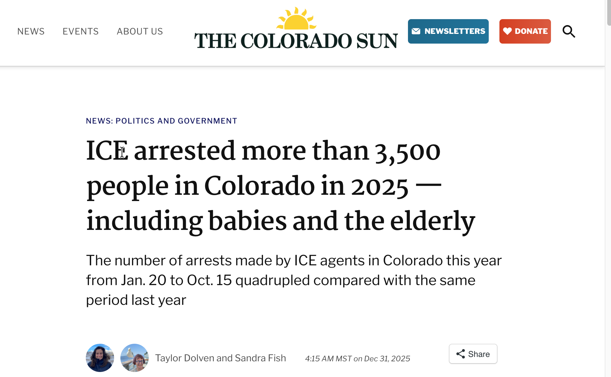
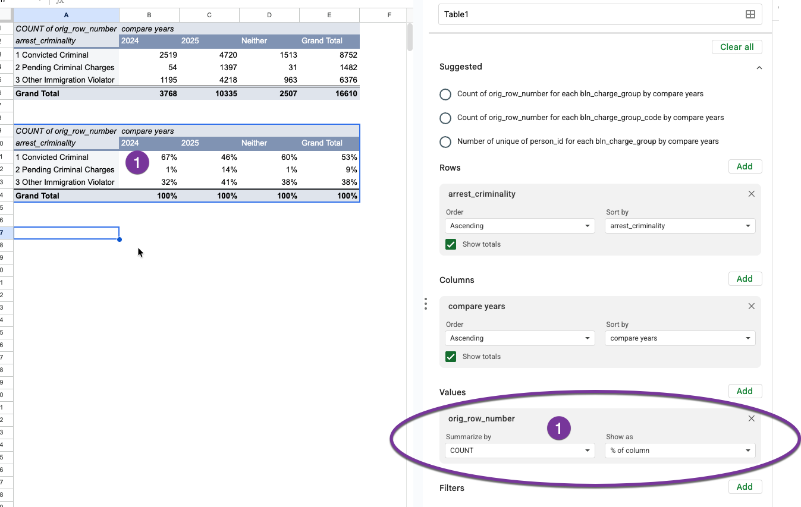
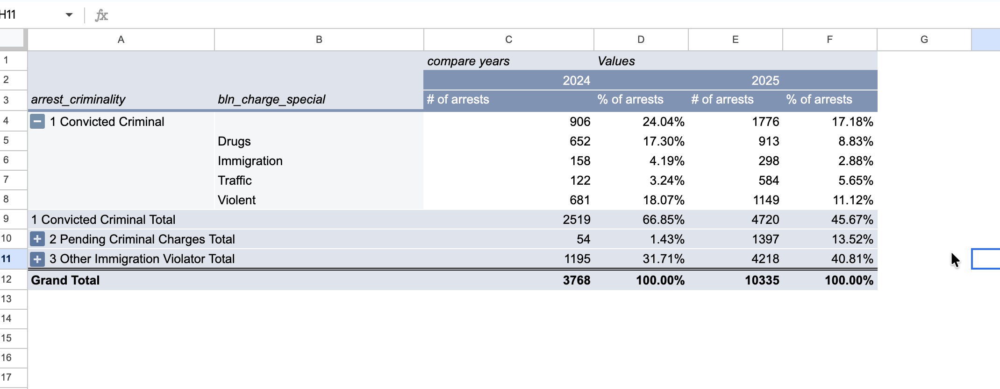
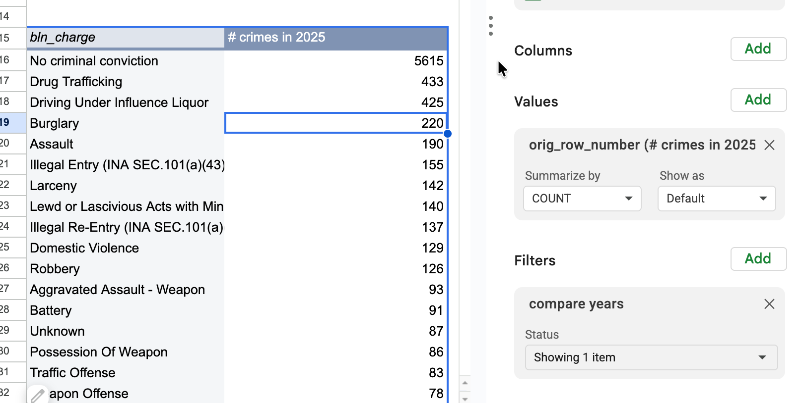
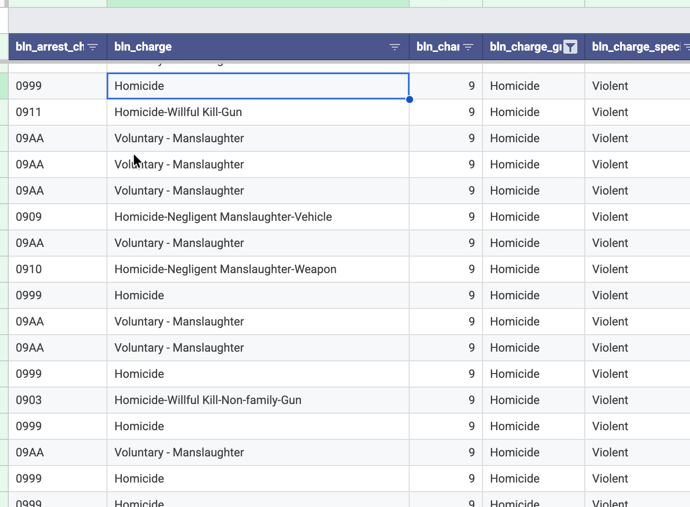
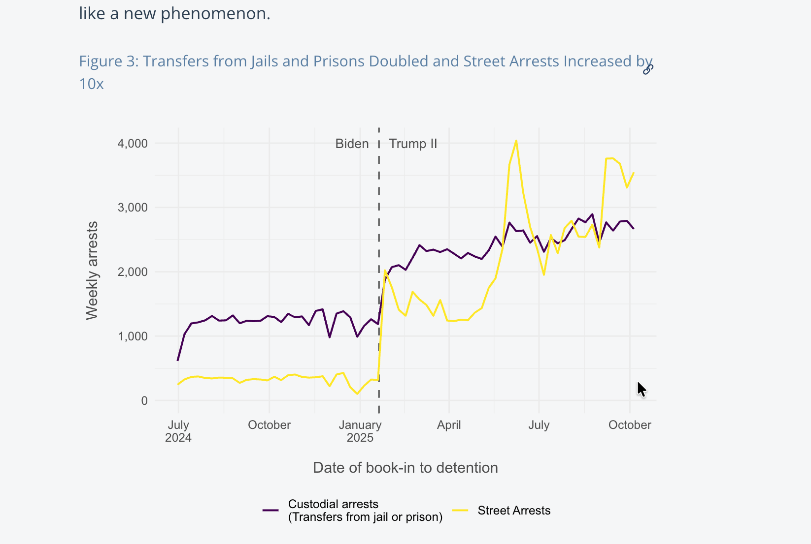
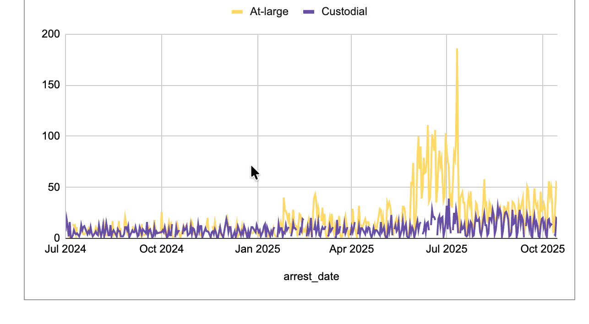
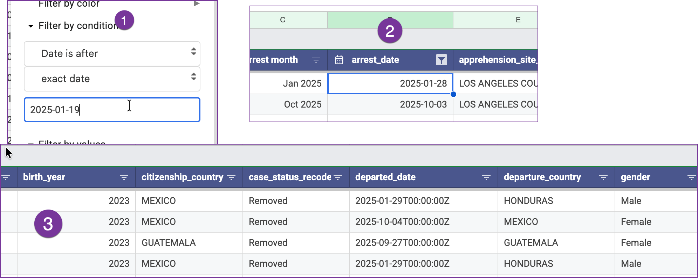
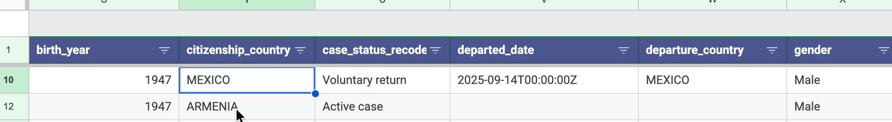

Profiling the arrest data
This section reviews particular passages in stories and studies that you can replicate in your own area. It assumes you have taken the first steps, outlined in the previous chapter, to download and organize the records you want to use in your analysis.
The pieces include:
The Deportation Data Projects analysis, “Immigration Enforcement in the First Nine Months of the Second Trump Administration”, by Graeme Blair and David Hausman
The Colorado Sun’s coverage of the criminal records of people arrested and a deep dive into the profile of arrests in their area: “Ice arrested more thatn 3,500 people in Colorado in 2025 - including babies and the elderly,” by Taylor Dolven and Sandra Fish an earlier story on the criminal histories in Colorado and Wyoming, published with WyomingFile.

- The Washington Post’s comprehensive view of street arrests (gift link), which go back to 2008. This analysis will be a shortened version of it, but the growth in “at-large” arrests is one of the most visible pieces of the enforcement surges.
We recommend reviewing each of these pieces when you’re analyzing your own area. Substantial differences in trends could suggest either an error in the data or the analysis, or could suggest newsworthiness. Only you can tell the difference.
These analyses relies on three elements:
- Recoding data into the exact categories you need, such as the timing categories shown in the last chapter.
- Possibly filtering the data to remove items you don’t want to see. If you find yourself always filtering for the same thing, consider making a copy of just the rows you want to include.
- Creating one- or two-way pivot tables, with percentages.
Criminal histories
The New York Times, Stateline and the Colorado Sun have gone beyond knowing that most people arrested in 2025 lacked a known criminal conviction. They also looked at the charges and the proportion that were violent. The BLN data slice provides the “charge group”, which is a general categorization for major crime types such as homicide, assault, traffic offenses and drugs.1
Here’s what the Colorado Sun and WyomingFile said, based on data through July 2025 :
Most people arrested by U.S. Immigration and Customs Enforcement agents between Jan. 20 and June 26 of this year in Colorado and Wyoming did not have any criminal convictions, according to ICE data released over the last few weeks. Among those arrested who had a conviction at the time of their arrest, the most serious crime is most often noted by ICE as drunken driving.2 in both Colorado and Wyoming, the data shows.
There are three ways to look at criminal histories, and each depends a little on rejiggering the data to meet your needs. Whether or not a person had a criminal conviction at the time of apprehension is listed in the arrests table, but the details of those charges are only found elsewhere in the ICE data. The BLN data matches the most recent “most serious criminal conviction” from the detention table to arrests.
Criminality at the time of apprehension:
Create a pivot table of the column called arrest_criminality:

(“Other immigration violator” is the way that ICE says that someone has no pending charges or convictions – they contend that everyone they arrest is an immigration violator.)
While not exactly the same, these numbers for the Los Angeles area are in rough agreement with the data from elsewhere, including the Colorado story. It suggests that ICE thinks there are pending criminal charges against many more immigrants in the previous year, but many fewer have actual convictions.
Breaking out the different administrations (either by looking at monthly trends or comparing like portions of years) can change the interpretation a lot! In this case, a majority of arrests were of people with criminal convictions since 2023, but the 2025 data shows a much different pattern.
Violent criminal history
BLN has added a “special” code to the data, referring to special categories of criminal convictions. Here’s what they look like for the Los Angeles area when combined with the criminality code:

This shows the proportion of arrests with violent criminal histories has fallen, to 11 percent, in the Los Angeles area.
Most frequent charges
The Colorado Sun / WyomingFile data through June surprisingly showed that the most frequent charge was drunken driving. Here’s what the charges look like in Los Angeles, through Oct. 15. (Note that the Filters section is used instead of comparing the two periods in this chart.)

BLN has also created a column called bln_charge_group, which combines crimes based on their standard FBI codes into more general groupings. For instance, all homicides are grouped together instead of being broken out by a specific type. Here’s a portion of the Los Angeles data showing the different crime categories :

Custodial vs. street arrests
Street arrests are considered any arrest made that was not part of a transfer from a detention center, jail or prison. One marked difference from previous years is that ICE is making many more of these arrests as shown in this weekly chart from the DDP paper.

Here’s what a similar chart of the Los Angeles data would look like, based on a pivot table by month3:

The overall number of arrests didn’t increase as much, partly because California does not honor the detainers that lead to custodial arrests. But the spike in at-large, or street arrests, is noticeable during the surge over the summer of 2025 in Southern California.
Countries and ages
Here’s what the Colorado Sun wrote about the youngest person arrested since January 2025:
Among the youngest people arrested in Colorado was a baby girl born in 2024, the data shows, with Mexican citizenship. ICE arrested her July 30 in the Denver area and deported her Aug. 8 to Venezuela, according to the data.
Here’s how you might find the same thing for your area:
- Filter for dates since Jan. 20, 2025
- Sort the table by birth year, in descending order
- Look across the table to see what happened to that toddler

Here, the youngest is a Mexican boy born in 2023, arrested on January 28 and removed the next day to Honduras, according to the data.
You can reverse the sorting and filter for “No criminal conviction” to find the oldest person without a criminal conviction - a Mexican man in his late 70s, arrested out in public in September, who then agreed to go leave voluntarily:

Although there is a difference in the detail coding between drug possession and sale, the actual data usually lumps it all together into “Dangerous Drugs”. We’re not trying to split them out here.↩︎
This analysis will use traffic violations rather than the detailed drunken driving specification↩︎
The DDP uses only data for arrests that resulted in a detention, which is why its headings are a little different↩︎